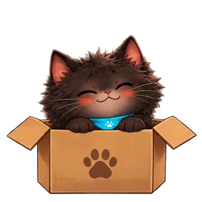
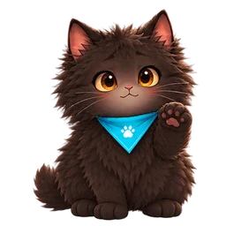
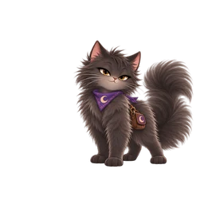
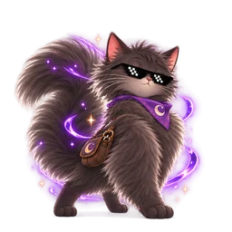

Bjorne e Morgana, in movimento
Le quattro animazioni approvate, ora nelle ricompense dei quiz.
Bjorne · La scatolina


Bjorne · Riproviamo


Morgana · Ottimo


Morgana · Aura

Le quattro animazioni approvate, ora nelle ricompense dei quiz.



